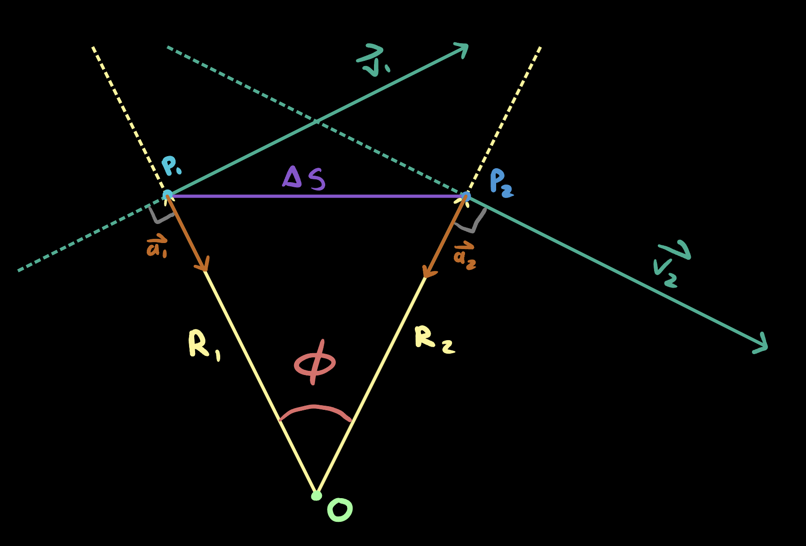

Introduction
In this blog, we will prove $ | \Delta \vec{v} | = \frac{| \vec{v_1} |}{R} \Delta s $.
This is my first real proof I've done on my own to understand my physics lesson so there may be some errors on the formatting or rules of proving an equation.
Please feel free to email me about any feedback or errors and I will correct them.
Theorem
In uniform circular motion, the magnitude of the change in velocity of an object $ | \Delta \vec{v} | $ is equal to the magnitude of initial velocity $ | \vec{v_1} | $ divided by the radius $ R $ of the circular path, multiplied by the displacement of the object along the circular path $ \Delta s $.
Assumptions
1) Using the Cartesian coordinate system in all models.
2) The path is a perfect circle and can be modeled by the equation $ R^2 = (x - a)^2 + (y - b)^2 $ where $ R $ is the radius of the circle, $ \{ a \in \mathbb{R} \} $ and $ \{ b \in \mathbb{R} \} $, and $ x, y $ are points on the circumfrence of the circle.
3) The center of the cirle is located at $ O = (0, 0) $. Meaning the circle can be modeled by the equation $ R^2 = x^2 + y^2 $ where $ R $ is the radius of the circle and $ x, y $ are points on the circumfrence of the circle.
4) The object has a constant speed.
5) The ratios of corresponding sides of similar triangles are equal.
Proof
Assume an object travels from position $ P_1 $ to $ P_2 $ along a circular path defined through assumptions 1, 2, and 3.
Both points $ P_1 $ and $ P_2 $ have their own distinct velocities and accelerations as it is traveling.
Let $ \vec{v_n} $ equal to the velocity vector of the object at $ P_n $ and $ \vec{a_n} $ equal to the acceleration vector of the object at $ P_n $.
To clarify, the first position of the object denoted $ P_1 $ has a velocity of $ \vec{v_1} $ and acceleration of $ \vec{a_1} $.
The second position of the object denoted $ P_2 $ has a velocity of $ \vec{v_2} $ and acceleration of $ \vec{a_2} $.
Using Pythagorean's theorem,
let $ \Delta s = \sqrt{ (P_{2x} - P_{1x})^2 + (P_{2y} - P_{1y})^2 } $, the object displacement from $ P_1 $ to $ P_2 $.
Let $ \vec{R_1} = x_1 \hat{\imath} + y_1 \hat{\jmath} $ and $ \vec{R_2} = x_2 \hat{\imath} + y_2 \hat{\jmath} $
Let $ \phi = \angle{P_1 O P_2} $: the angle between $ \vec{R_1} $ and $ \vec{R_2} $.
Figure 1 bellow is a visualizer for the variables we have established thus far.
Figure 1
Using Figure 1, we can construct two triangles $ \triangle P_1 O P_2 $ and $ \triangle AP_1B $.
$ \triangle AP_1B $ is constructed by putting the initial points of the velocity vectors on top of each other.
$ \triangle AP_1B $ doesn't necessarily exist in our model unless we translate $ \vec{v_2} $'s initial point to $ P_1 $.
Alternativly, we can create $ \triangle ACB $ using vectors in a seperate model where
point $ A $ is the origin,
point $ C = (v_{2x}, v_{2y}) $,
and $ B = (v_{2x} - v_{1x}, v_{2y} - v_{1y}) $.
Figure 2 is a visualizer for this process.
Figure 2
When we model $ \triangle ACB $, we can empirically conclude that $ \overline{AB} $ is equal to the magnitude of $ \Delta \vec{v} $.
We can also prove this mathematically shown in Figure 3.
Theorem
The length of side $ \overline{AB} $ is equal to the magnitude of the change in velocity $ | \Delta \vec{v} | $.
Given
G.1) $ \overline{CB} = | \vec{v_1} | $
G.2) $ \overline{AC} = | \vec{v_2} | $
G.3) $ A = (0, 0) $
G.4) $ B = (v_{2x} - v_{1x}, v_{2y} - v_{1y}) $
G.5) $ C = (v_{2x}, v_{2y}) $
Proof
Using Pythagorean's theorem,
$ \overline{PQ}^2 = (Q_x - P_x)^2 + (Q_y - P_y)^2 $ where $ P \in (-\infty, \infty) $ and $ Q \in (-\infty, \infty) $.
$ \implies \overline{AB}^2 = (B_x - A_x)^2 + (B_y - A_y)^2 $
$ \implies \overline{AB} = \sqrt{(B_x - A_x)^2 + (B_y - A_y)^2} $
$ \iff \overline{AB} = \sqrt{((v_{2x} - v_{1x}) - 0)^2 + ((v_{2y} - v_{1y}) - 0)^2} $ G.3, G.4
$ \iff \overline{AB} = \sqrt{(v_{2x} - v_{1x})^2 + (v_{2y} - v_{1y})^2} $
$ \forall \vec{w} \in \mathbb{R} (\vec{w} := \vec{w_x}\hat{\imath} + \vec{w_y}\hat{\jmath}) $
$ \implies $
$ \Delta \vec{v_x} := v_{2x}\hat{\imath} - v_{1x}\hat{\imath} $
$ \implies $
$ \Delta \vec{v_y} := v_{2y}\hat{\jmath} - v_{1y}\hat{\jmath} $
$ \Delta \vec{v} := \Delta \vec{v_x}\hat{\imath} + \Delta \vec{v_y}\hat{\jmath} $
$ \iff \Delta \vec{v} = (v_{2x} - v_{1x})\hat{\imath} + (v_{2y} - v_{1y})\hat{\jmath} $
$ \implies \Delta \vec{v} = v_{2x}\hat{\imath} - v_{1x}\hat{\imath} + v_{2y}\hat{\jmath} - v_{1y}\hat{\jmath} $
$ \iff \Delta \vec{v} = v_{2x}\hat{\imath} + v_{2y}\hat{\jmath} - v_{1x}\hat{\imath} - v_{1y}\hat{\jmath} $
$ \forall \vec{w} \in \mathbb{R} (| \vec{w} | := \sqrt{(\vec{w_x}\hat{\imath})^2 + (\vec{w_y}\hat{\jmath})^2}) $
$ \implies | \Delta \vec{v} | := \sqrt{(\Delta \vec{v_x}\hat{\imath})^2 + (\Delta \vec{v_y}\hat{\jmath})^2} $
Assume $ \overline{AB} = | \Delta \vec{v} | $
$ \sqrt{(v_{2x}\hat{\imath} - v_{1x}\hat{\imath})^2 + (v_{2y}\hat{\jmath} - v_{1y}\hat{\jmath})^2} = \sqrt{(\Delta \vec{v_x}\hat{\imath})^2 + (\Delta \vec{v_y}\hat{\jmath})^2} $
$ \implies \pm((v_{2x}\hat{\imath} - v_{1x}\hat{\imath})^2 + (v_{2y}\hat{\jmath} - v_{1y}\hat{\jmath})^2) = \pm((\Delta \vec{v_x}\hat{\imath})^2 + (\Delta \vec{v_y}\hat{\jmath})^2) $
$ \iff (v_{2x}\hat{\imath} - v_{1x}\hat{\imath})^2 + (v_{2y}\hat{\jmath} - v_{1y}\hat{\jmath})^2) = (\Delta \vec{v_x}\hat{\imath})^2 + (\Delta \vec{v_y}\hat{\jmath})^2 $
$ \implies (v_{2x}\hat{\imath} - v_{1x}\hat{\imath}) + (v_{2y}\hat{\jmath} - v_{1y}\hat{\jmath}) = (\Delta \vec{v_x}\hat{\imath}) + (\Delta \vec{v_y}\hat{\jmath}) $
$ \iff v_{2x}\hat{\imath} - v_{1x}\hat{\imath} + v_{2y}\hat{\jmath} - v_{1y}\hat{\jmath} = v_{2x}\hat{\imath} - v_{1x}\hat{\imath} + v_{2y}\hat{\jmath} - v_{1y}\hat{\jmath} $
$ \overline{AB} = | \Delta \vec{v} | = v_{2x}\hat{\imath} - v_{1x}\hat{\imath} + v_{2y}\hat{\jmath} - v_{1y}\hat{\jmath} $ $ \square $
Figure 3
Figure 4 is a visualizer for the two triangles $ \triangle P_1 O P_2 $ and $ \triangle ACB $ with $ \alpha = \angle ACB $: the angle between vectors $ \vec{v_1} $ and $ \vec{v_2} $.
Figure 4
Given that the trajectory is in uniform circular motion, vectors $ \vec{v_1} $ and $ \vec{v_2} $ have an acceleration pointing towards the center thus $ \vec{v_1} \perp \vec{a_1} $ and $ \vec{v_2} \perp \vec{a_2} $.
Given the object has a constant speed on the circular path, $ \vec{v} $ only changes its direction.
Therefore, the component of acceleration parallel to the velocity vector is zero $ | \vec{a_{\|}} | = 0 $
and the component of acceleration perpendicular to the velocity vector points towards the center of the circle $ \vec{R} \| \vec{a_{\perp}} $ given that $ | \vec{R_1} | = R = \sqrt{P_{1x}^2 + P_{1y}^2} $.
Thus $ ( \vec{R} \| \vec{a} ) \wedge ( \vec{v} \perp \vec{a} ) \equiv \vec{R} \perp \vec{v} $.
Given this information we can fill out $ \triangle P_1 O P_2 $ (figure 5).
Now let's layer our different triangles on top of eachother where $ P_1 = A $ (figure 6,7).

Figure 5
Figures 6 and 7
Since $ \vec{v_2} \perp \vec{R_2} $ then $ \beta = 90 - \phi \implies 90 = \beta + \phi $.
Since $ \vec{v_1} \perp \vec{R_1} $ then $ \beta = 90 - \alpha \implies 90 = \beta + \alpha $.
$ \therefore 90 = \beta + \alpha = \beta + \phi $
$ \implies \beta + \alpha = \beta + \phi $
$ \implies \alpha = \phi $.
By definition, $ \triangle P_1 O P_2 $ is isosoles because $ R = R_1 = R_2 \implies \overline{P_1O} = \overline{P_2O} $.
Since the particle is moving at a constant speed, $ | \vec{v_1} | = | \vec{v_2} | $; therefore,
$ \triangle ACB $ is also isosoles because $ | \vec{v_1} | = | \vec{v_2} | \implies \overline{AC} = \overline{BC} $.
Given that $ \triangle P_1 O P_2 $ and $ \triangle ACB $ are isosoles, $ \overline{P_1O} = \overline{P_2O} \implies \angle OP_1P_2 = \angle OP_2P_1 $ and $ \overline{AC} = \overline{BC} \implies \angle CAB = \angle CBA $.
Let $ \gamma = \angle OP_1P_2 = \angle OP_2P_1 $.
Let $ \iota = \angle CAB = \angle CBA $.
By definition, the sum of all angles of a triangle equate to 180 degrees.
$ 180 := \phi + 2 \gamma := \alpha + 2 \iota $
$ \implies \phi + 2 \gamma = \alpha + 2 \iota $
$ \implies 2 \gamma = 2 \iota $
$ \therefore \gamma = \iota $
By AA similarity, $ \triangle P_1 O P_2 $ and $ \triangle ACB $ are similar.
$ \triangle P_1 O P_2 \sim \triangle ACB $
$ \implies \frac{\overline{AB}}{\overline{P_1P_2}} = \frac{\overline{AC}}{\overline{P_1O}} $
$ \iff \frac{| \Delta \vec{v} |}{\Delta s} = \frac{| \vec{v_1} |}{R} $
$ \iff | \Delta \vec{v} |= \frac{\frac{| \vec{v_1} |}{R}}{\Delta s} $
$ \iff | \Delta \vec{v} |= {\frac{| \vec{v_1} |}{R}}\Delta s $ $ \square $